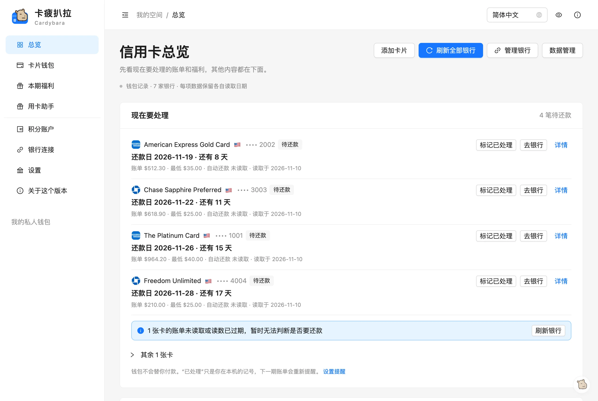
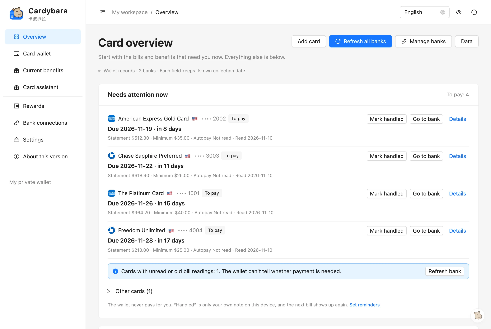
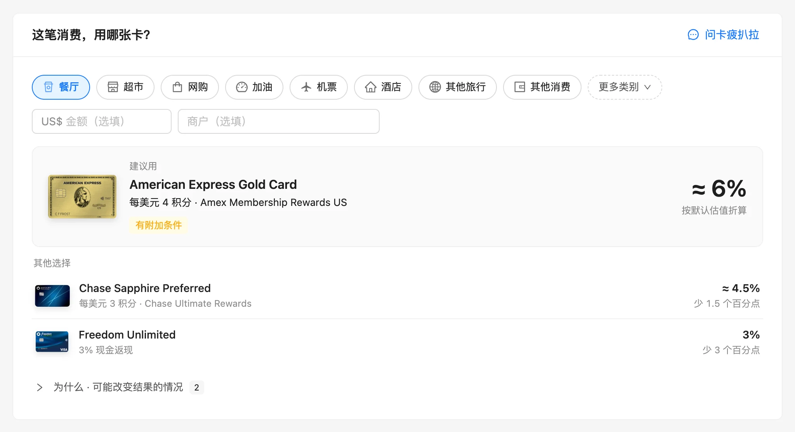
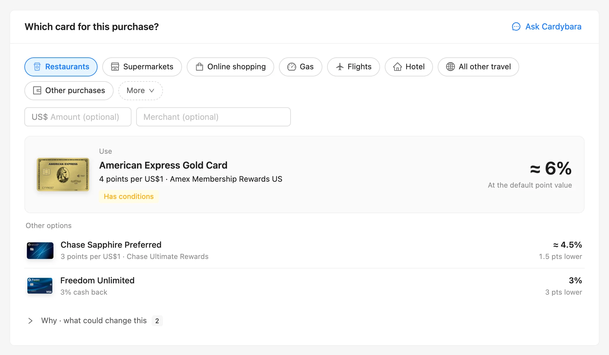
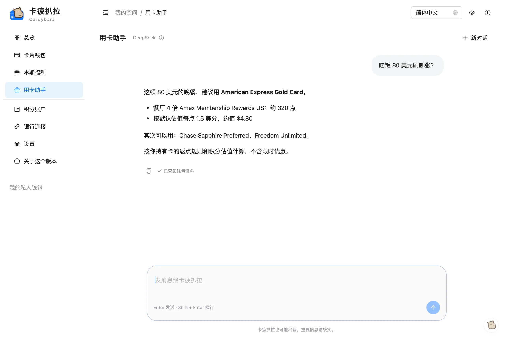
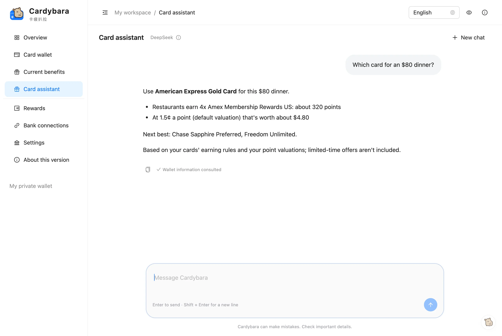
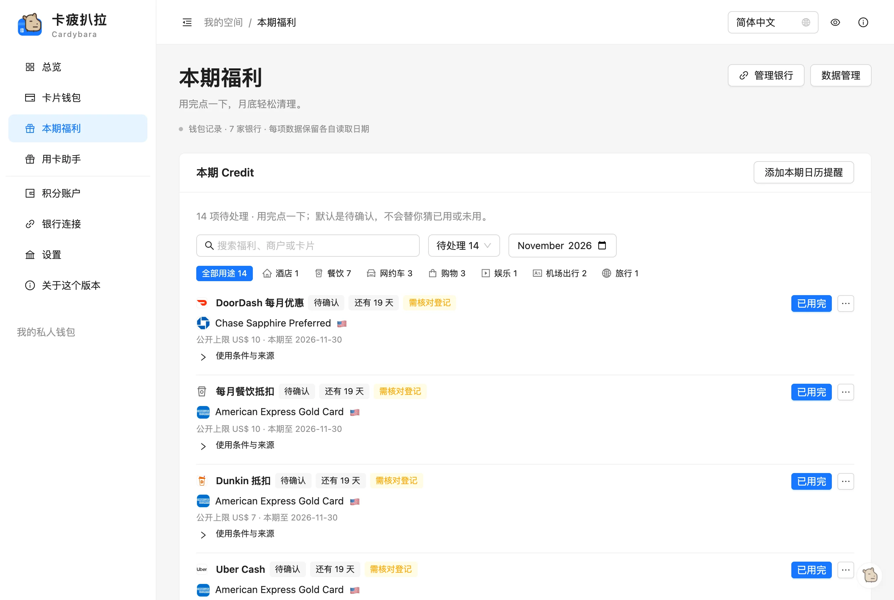
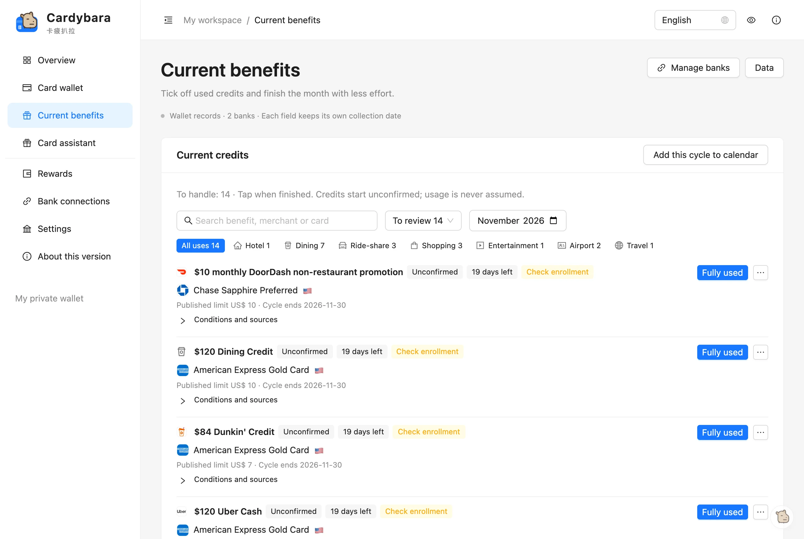
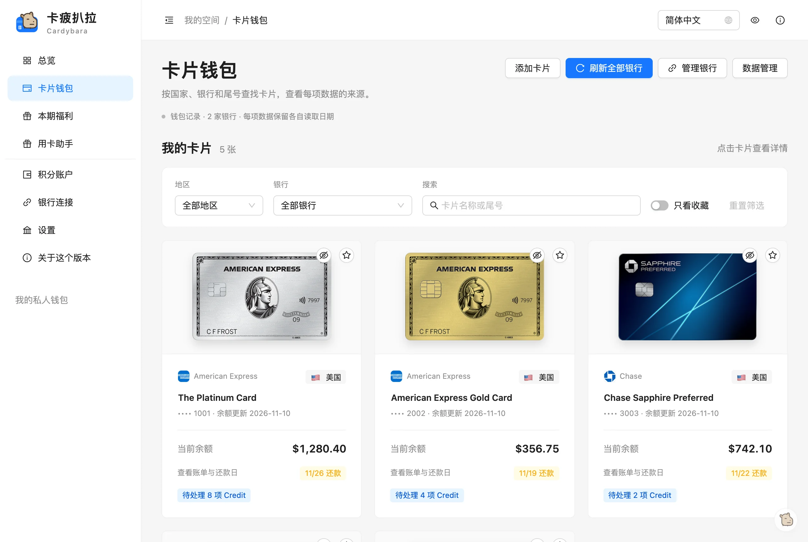
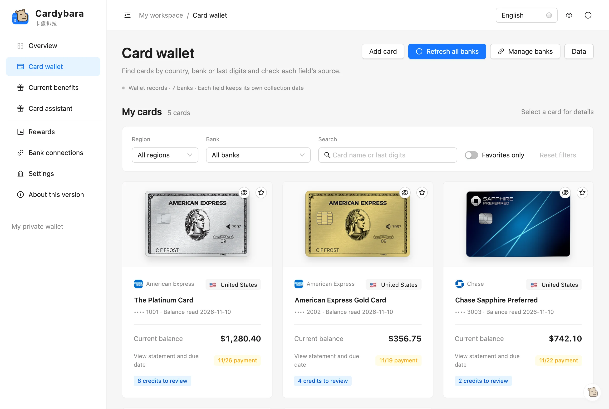

你的信用卡管家
问一句就知道刷哪张卡Your credit-card butler.
Ask which card to use.
账单、积分、福利一屏看清。卡疲扒拉是一个 Chrome 扩展：替你读银行页面上的余额和还款日，记着每张卡的福利，帮你算这笔消费刷哪张最划算。钱包数据只留在你的浏览器里。Statements, points and benefits on one screen. Cardybara is a Chrome extension that reads balances and due dates from your bank's pages, keeps track of every card's benefits, and works out which card to use for a purchase. Your wallet stays in your browser.
桌面版 Chrome · 邀请制 · 不是 Chrome 应用商店版本Desktop Chrome · invite only · not a Chrome Web Store release





它能帮你做什么What it does
卡多了，账单日、积分和每月的 credit 很容易忘。卡疲扒拉把它们放在一起，替你记着。With a few cards, due dates, points and monthly credits are easy to lose track of. Cardybara keeps them in one place.
读取银行Reads your bankChase · Amex US
每张卡的余额、账单金额、最低还款和还款日；Membership Rewards 和 Ultimate Rewards 积分，同一个积分池只算一次。只在你点刷新时读取，只读不写。Each card's balance, statement amount, minimum payment and due date; Membership Rewards and Ultimate Rewards points, with a shared pool counted once. Reads only when you click refresh, and only reads.
手动添加其他卡Add any other card
从带卡面的卡种列表里选，包括 Bilt（Blue、Obsidian、Palladium）和常见联名卡。手动添加的卡不读取余额和账单。Pick the product from a list with card images, Bilt (Blue, Obsidian, Palladium) and common co-brands included. Cards you add by hand don't get balances or statements read.
福利与提醒Benefits and reminders
每张卡本期还有哪些 credit、什么时候到期，一眼看到；用过就标记。可以开启账单和福利提醒（默认关闭，用 Chrome 通知）。See each card's credits for this period and when they end, and mark what you've used. Optional statement and benefit reminders (off by default, via Chrome notifications).
这笔消费，用哪张卡？Which card for this purchase?
选消费类别，直接给出建议用的卡和其他选择，按你的持卡规则和积分估值计算，不含限时优惠。Pick a category and see the card to use and the other choices, from your cards' rules and your point valuations, without limited-time offers.
积分估值Point valuations
每种积分值多少钱，有默认值，你可以改成自己的；比较刷哪张卡时就按它算。What each kind of point is worth, with a default you can change; comparisons use your numbers.
用卡助手The assistant需邀请码invite code
问持卡、福利、积分和年费周期的问题，或者比较一笔消费刷哪张卡。回答边生成边显示；查不到会说不知道，不会猜。Ask about your cards, benefits, points and card-year cycles, or compare which card to use. Answers appear as they're written; when it can't find something it says so instead of guessing.
问一句，就知道刷哪张Ask, and know which card to use
“吃饭 80 美元刷哪张？”助手会调用钱包里的比较工具，按你持有的卡和你的积分估值回答，并告诉你其次可以用哪张。“Which card for an $80 dinner?” The assistant runs the wallet's own comparison over the cards you hold and your point valuations, and tells you the next best choice too.
它看不到银行余额、账单和还款日；不能付款、操作银行或替你登记优惠。It can't see bank balances, statements or due dates, and it can't pay, act on your bank or enrol offers.


本期福利，别再过期Use your credits before they lapse
按类别和到期时间列出每张卡的 credit，附使用条件和来源。默认是“待确认”，不替你猜用没用。按卡年重置的福利，按你填的年费日算周期。Every card's credits by category and end date, with conditions and sources. They start as “to confirm” — the wallet never guesses whether you used one. Card-year credits follow the annual fee date you enter.


所有卡，一个钱包Every card, one wallet
银行读到的卡和你手动添加的卡放在一起，每个数字都标着读取日期。没读到的金额保持未知，不按零算。Cards read from the bank and cards you add yourself sit together, and every number shows when it was read. Amounts that weren't read stay unknown, never zero.


截图来自真实界面，使用虚构的示例钱包；金额、尾号和日期都是编的。Screenshots are of the real interface with a made-up sample wallet; amounts, card endings and dates are invented.
你的数据，留在你这里Your data stays with you
- 钱包数据保存在这台电脑的 Chrome 里，不上传，也不同步。Your wallet stays in Chrome on this computer; it is not uploaded or synced.
- 登录、密码和手机验证都在银行官网由你本人完成，钱包不读取也不保存它们。只读取：不付款、不转账、不兑换积分、不登记优惠，也不改银行设置。You sign in, enter passwords and confirm on your phone on the bank's own site; the wallet never reads or stores them. Read only: no payments, transfers, redemptions, offer enrolment or setting changes.
- 用卡助手在 Cardybara 服务上运行：服务收到你的问题、这次对话的前文、持有的卡种、积分估值、每张卡是否填了年费日，以及助手请求的钱包查询结果，交给 AI 模型处理；不收到卡号、余额或账单。服务不保存这些内容，只记录邀请码编号、时间、用量和状态。The assistant runs on the Cardybara service: it receives your question, the earlier turns of the conversation, the card products you hold, your point valuations, whether each card has an annual fee date, and the wallet lookups the assistant asks for, and passes them to an AI model; it does not receive card numbers, balances or statements. The service does not store any of it; it records only the invite code's id, time, usage and status.
- AI 识别卡种默认关闭；开启后，未识别卡片的银行、地区和卡名（不含尾号和金额）经 Cardybara 服务发给 AI。AI card recognition is off by default; when on, an unrecognised card's bank, region and name (no tail or amounts) go through the Cardybara service to the AI.
- 没有广告，也没有使用统计。不输入邀请码也能正常使用钱包，只是没有聊天助手。No ads and no usage analytics. Without an invite code the wallet still works, just without the chat assistant.
这个网站本身也不用 cookie、统计或表单。卸载扩展会删除扩展里的数据；需要保留的话，先在“数据管理 → 导出备份”。This website itself uses no cookies, analytics or forms. Uninstalling the extension deletes its data; export a backup first (Data → Export backup) if you want to keep it.
加入内测Join the beta
现在是给朋友试用的测试版，邀请制。想试的话，直接问邀请你的人（或项目作者）要下载链接和邀请码。This is a friends beta, by invitation. If you'd like to try it, ask the person who invited you (or the author) for the download link and an invite code.
- 下载并加载扩展
从 GitHub Release 下载 zip，解压后在chrome://extensions打开开发者模式，加载解压的文件夹。Download and load it
Download the zip from the GitHub release, unzip it, turn on Developer mode inchrome://extensionsand load the unzipped folder. - 输入邀请码
设置 → AI 服务，粘贴邀请码。不输入也能用钱包，只是没有聊天助手。Enter your invite code
Settings → AI service, paste the code. The wallet works without it, just without the chat assistant. - 连接银行
点“连接银行”，在 Chase 或 Amex 美国官网自己登录，钱包读取余额、账单和积分。Connect a bank
Click “Connect bank”, sign in yourself on the Chase or Amex US site, and the wallet reads balances, statements and points.
- 只连接 Chase 和 American Express 美国；其他银行的卡可以手动添加，但不读取余额和账单。Only Chase and American Express US connect; other banks' cards can be added by hand, without balances or statements.
- 联名卡的航空、酒店积分不读取；只在你点刷新时读取，不会后台自动刷新。Airline and hotel co-brand points aren't read; it reads only when you click refresh, never in the background.
- 只在桌面版 Chrome 上测试过。Tested on desktop Chrome only.